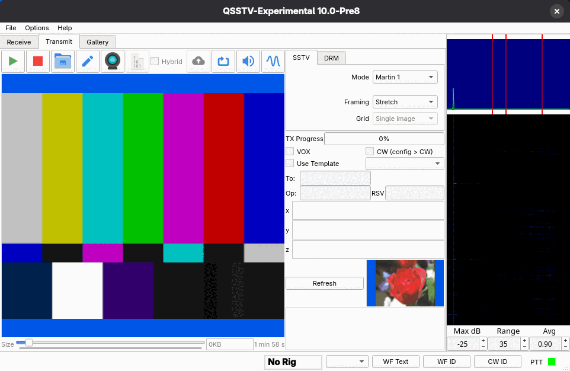
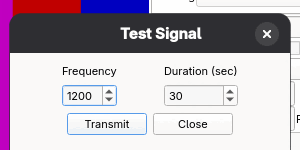
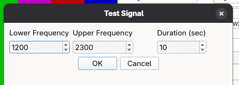

Transmitting
Sending an SSTV picture
- Set your operator data, sound output and PTT in Configuration.
- Open the Transmit tab and choose the SSTV settings tab.
- Load a picture with the Load image toolbar button (a folder icon), or send one from the gallery with To TX. To try the program without a picture file, use File > TX Test Pattern.
- Choose the Mode. The estimated transmission time is shown below the picture.
- Check your audio level, then press the green Start transmit button. TX Progress shows how far along it is. The red square stops the transmission and returns to receive.

Set your transmit audio level so the radio is not overdriven. Use a tone (see below) or the test pattern into a dummy load to adjust it.
Toolbar
| Button | What it does |
|---|---|
| Green triangle | Start transmit. |
| Red square | Stop transmit. |
| Folder | Load image. |
| Pencil | Edit picture. Opens a copy of the current picture in your picture editor and uses it again when you save it (not available while transmitting). See Editing a picture. |
| Camera | Camera snapshot, from a connected webcam, or WA8LMF Beacon Mode (see below). While WA8LMF Beacon Mode runs the icon turns into a green-tinted beacon icon: click it to stop. |
| Binary icon (1 0 101) | Send binary file. A DRM function: see Digital SSTV (DRM). |
| Hybrid checkbox | Hybrid mode for DRM transmissions (see Hybrid). It is only available on the DRM tab. |
| Cloud arrow | Upload Now: upload a hybrid picture to the server without transmitting. |
| Loop arrows | Send repeater tone: a 1750 Hz tone for 3 seconds. |
| Speaker | Send tone: opens a dialog for a test tone. |
| Sine wave | Send sweep tones: opens a dialog for a frequency sweep. |
WA8LMF Beacon Mode
WA8LMF Beacon Mode periodically grabs a picture from a webcam and transmits it, for example from a mobile station on the higher HF bands to attract a reply. Click the Camera button, choose the camera, pixel format and resolution (the dialog remembers these for next time), then set WA8LMF Beacon Mode to On and pick Beacon every 1 to 60 minutes. Press OK: the picture currently showing in the dialog becomes the transmit picture straight away and is sent 10 seconds later (time to adjust the SSTV or DRM settings), then one every N minutes, until you stop it. While it runs, the camera button shows a green-tinted beacon icon, and a countdown to the next picture appears at the left of the status bar (when no other status message is showing).
Click the green beacon icon to stop WA8LMF Beacon Mode. To start it again, open the camera dialog and press OK again (the WA8LMF Beacon Mode setting is Off every time the dialog opens).
WA8LMF Beacon Mode has no transmit settings of its own. Each picture is sent exactly as if you had pressed Start: with the SSTV or DRM tab that is currently selected, its mode and options, the selected template (for example a call sign overlay) and the picture size. The camera is only switched on while each later picture is captured, using the format and resolution chosen in the dialog. It is always off when the program starts.
With Configuration > GPS set up, each beacon picture is preceded by a fresh GPS reading, so a %a/%b position in the template follows a moving station.
The reading runs while the camera starts, and the beacon waits for it for up to 10 seconds. If the GPS has no position the beacon is sent anyway, with the position that was last in the Lat and Long boxes.
With the city and state lookup on, the beacon also waits for the %g place of a new position (up to about 8 seconds more) and is sent without it when there is no answer.
When a scheduled beacon picture cannot be transmitted, the countdown in the status bar is replaced by a red message, for example WA8LMF Beacon Mode not sent 14:32: a picture is being received, no camera found, or the transmitter is busy. The beacon tries again after 30 seconds and the countdown returns as soon as a picture is sent.
An unattended WA8LMF Beacon Mode transmission is still your transmission: follow your license conditions on automatic and unattended operation, and identify as required (use a template with your call sign).
GPS position
The Lat and Long boxes under To, Op and RSV hold the latitude and longitude of the station, by default in decimal degrees (north and east positive, for example
47.60620 and -122.33210). A template shows them with the %a (latitude) and %b (longitude) macros. Type the position in, or press
the GPS button next to the boxes to read it from a GPS receiver, once it is set up in Configuration > GPS. If the GPS cannot be read a message says why and
the boxes keep their values. Unlike To, Op and RSV, the position is remembered when you close the program. In decimal degrees what you type is printed as typed, so you can also use another notation, for example
47°36'N.
Set Position format in Configuration > GPS to Degrees and decimal minutes for the notation of GPS receivers and APRS, 47 36.37N and 122 19.93W
(084 23.82W: the longitude has three degree digits). The boxes, the GPS button and the %a and %b macros then all use it, and a position typed or pasted in any notation, such as the decimal degrees of an online map, is
converted when you leave the box.
The Place box holds the city and state for the %g macro, for example Seattle, WA. Type it in, or let the program find it: with
Look up the city and state on the internet ticked in Configuration > GPS, a position read with the GPS button or typed into the
Lat and Long boxes is sent to OpenStreetMap, which answers with the place. The state is the two or three letter code in the United States, Canada and Australia and the full name elsewhere.
Without an internet connection, or when the service knows no place there, the box keeps its text, and the GPS button shows a message that says why. Leaving the Lat or Long box without changing it looks nothing up, so a place you typed stays until the position changes or you press GPS.
The place is remembered when you close the program, like the position.
A transmission uses the position that is in the boxes when you start it. WA8LMF Beacon Mode reads the GPS, and looks up the place, again for every picture.
SSTV settings
- Mode
- The transmit mode. All modes are in SSTV modes.
- Framing
- How the picture is fitted to the mode's picture size: Stretch, Crop, Fit or Free. With Free you zoom and pan the picture exactly into the frame (mouse wheel to zoom, drag to pan, and a right-click menu to reset zoom and pan).
- Grid
- Single image, Grid 1x2, Grid 2x1 or Grid 2x2: stitch several pictures together. This is only offered on modes whose picture is larger than 512x400 pixels (the size of PD160), such as PD120 (640x496).
Framing and grids
With a grid selected, the picture area is divided into cells. Right-click a cell to load a picture into it, edit it, copy it or paste into it. The Framing setting then applies to the selected cell. In the gallery, To TX fills the first empty cell and offers an Auto / Grid N submenu to pick a cell. Press Delete to remove the picture of the selected cell. The same Framing and Grid controls exist on the DRM tab.
Options below the settings
- VOX
- Sends a leading tone before the picture, so a VOX-keyed transmitter is already keyed when the picture starts.
- CW (config > CW)
- Sends CW at the end of the transmission. The text is set in Configuration > CW.
- Use Template and the template list
- Lays the picture into a template (made with the template editor: press Edit... next to the list, or its arrow for a new template), for example with a callsign banner. The To, Op and RSV boxes and the three large text boxes (x, y, z) are values for the template; Refresh applies them to the picture. The Lat, Long and Place boxes hold the station position and its city and state, see GPS position.
- Size slider and size box
- Under the picture: the size and the estimated transmit time. With DRM the slider sets the compressed picture size, and the preview updates while you drag it.
When Save TX images in TX SSTV or TX DRM directory is ticked in Configuration > Directories, every picture you transmit is also stored in that directory and appears in the gallery's TX tabs.
Tones and sweeps
These are for adjusting audio levels and testing.


The tone and sweep dialogs remember their last settings. The repeater-tone button needs no dialog.